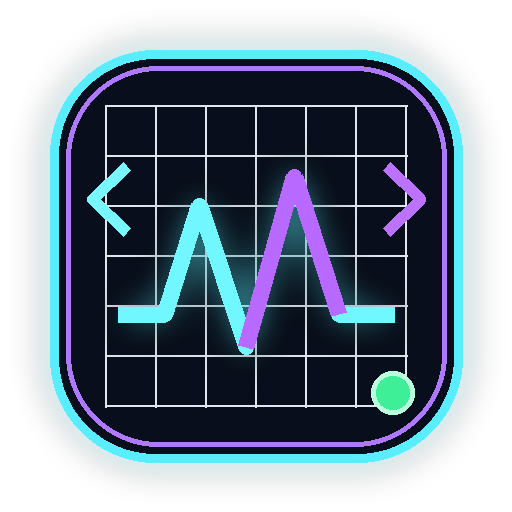

OpenCode
等待连接
v3.4.3 · WebView2
EN
5h
—
周
—
月
—
60s
暂无模型记录
连接 OpenCode
登录后自动显示三项已用额度和最近 50 条调用。
网页登录
滚动额度
5 小时
等待数据
—
已用
每周额度
7 天
等待数据
—
已用
每月额度
30 天
等待数据
—
已用
请求
—
输入
—
缓存
—
最近调用
0 / 50
打开 OpenCode
暂无调用记录
1 / 5
挂件设置
简洁、清晰、贴边不打扰
界面语言
只翻译软件界面，OpenCode 数据保持官网原文
中文
English
刷新频率
自定义秒数，默认 60 秒
秒
贴边自动隐藏
拖到顶部或右侧即可缩进去
始终置顶
保持在其他窗口上方
开机启动
登录系统后自动运行
额度提醒
剩余额度低于阈值时通知
剩余阈值
25%
NG 模型警报
检测到 NG 模型时响铃并弹出系统通知
OK / NG 模型判断
每行一个模型；支持 * 通配符，NG 优先
OK
允许模型
NG
警报模型
登录 / 添加账户
完成
贴边后鼠标靠近会自动展开。模型规则不区分大小写；相同记录只警报一次。